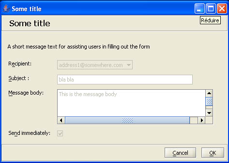
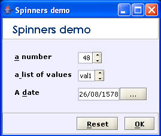
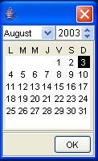
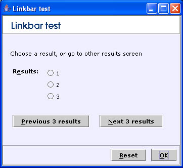

|
||||||||||||
|


ScreenshotsHere is a screenshot of the form created in the AnForm usage example using a stylesheet. The look and feel used here is the JGoodies Plastic3D look and feel: Here is another example with a label field and the same properties as above only non-editable:  This is an AntMenu example: The spinner controls along with a date chooser:  The calendar control associated to the date chooser:  Example using a linkbar with an AntForm:  |